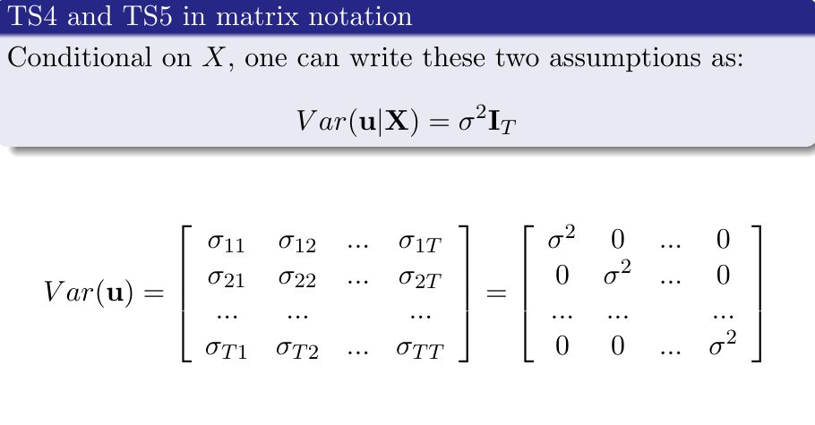

Apply the time-series variance and exact-inference assumption ladder
Explanation, worked examples and practice
Useful first: Derive time-series OLS unbiasedness and diagnose feedback against strict exogeneity
Outcome and conditions
Two additional assumptions for conventional variance The covariance terms hidden in the simple-slope proof Multiple-regression precision, residual variance, and BLUE Normality and exact finite-sample inference
Study conditions, assessment scope and sources
Derive and compute conditional OLS variance quantities and state the assumptions for BLUE and exact finite-sample inference. Required components: conditional_covariance_derivation, variance_df_and_null_statistic, blue_class_and_exact_inference_limits. Supported work may use the cited notes; independent checks use no notes, internet, solution or hints. A basic calculator and blank paper are allowed; reasoning, formula selection and assumptions must be supplied by the learner. Numerical examples below are agent-created hypothetical instantiations unless explicitly labelled as a finished-note example. They do not assert current market or policy facts.
Prerequisites and checks
Check the prerequisites
O010-P1 / item_version 1: O009 is needed because conditional mean/rank conditions are distinct from variance and distribution restrictions. Prompt: Does strict exogeneity by itself eliminate \(\operatorname{Cov}(u_{t},u_{s}\mid X)\)? Key: No; zero conditional means do not imply zero cross-date covariance. Additional no-serial-correlation condition is needed. Pass requires the keyed mechanism and qualification; partial means an omitted step; fail means a conflicting mechanism. Adequate committed evidence under a compatible criterion permits skipping this diagnostic. Otherwise repair through Outcome and conditions before continuing.
Motivation and explanation
Set \(A=(X'X)^{-1}X'\). With whole \(X\) fixed, \(\operatorname{Var}(\widehat\beta\mid X)=A\Omega A\prime\) where \(\Omega=\operatorname{Var}(u\mid X)\). Homoskedasticity controls diagonals, no serial correlation controls off-diagonals; together \(\Omega=\sigma^2 I\) and \(A\Omega A'=\sigma^2(X'X)^{-1}\). In simple regression the slope is a weighted error sum, whose variance contains both \(\sum_t a_t^2\sigma_t^2\) and \(2\sum_{t<s}a_ta_s\operatorname{Cov}(u_t,u_s\mid X)\) terms. Dropping cross terms requires the covariance assumption. Multiple-regression precision depends on regressor variation left after the others: \(SST_j(1-R_j^2)\), with an auxiliary—not outcome—\(R^2\). Estimate \(\sigma^2\) by \(SSR/(T-k-1)\); all coefficients including intercept consume degrees of freedom. These assumptions make OLS BLUE conditional on \(X\) among linear unbiased estimators. Exact null \(t\) and joint \(F\) require additionally errors independent of \(X\) and iid normal, not merely normal marginals. Normal errors imply the named mean/variance/no-serial conditions, but never rank. Serial correlation can coexist with strict exogeneity/unbiasedness while invalidating the simplified variance and exact-inference use. Alternative covariance estimators are future content, not improvised here.
Read the full explanation
Reading context
Deliver these complete reused passages before the worked example; earlier concise prompts are checkpoints, not substitutes. Necessary prerequisites use the complete prepared lessons specified above.
Source passage
Origin: reused complete checked passage Two additional assumptions for conventional variance; fingerprint b15a3499dc1e95b326b898a39f5d58f9d72de24432544877ddd9d5a586775e4b. Heading depth alone is adapted.
Two additional assumptions for conventional variance
TS4 requires \(\operatorname{Var}(u_t\mid X)=\sigma^2\) for each date: the conditional variance is constant over time and does not depend on any sample-date regressors. TS5 requires \(\operatorname{Cov}(u_t,u_s\mid X)=0\) for \(t\ne s\); the slide writes the equivalent zero-correlation condition when variances are positive. Nonzero covariance across dates is serial correlation, also called autocorrelation. These are different restrictions: constant variance does not make cross-date covariances zero. Lecture 2, PDF pp. 15–17
Together they give the \(T\times T\) covariance matrix
Every diagonal element is the same variance and every off-diagonal element is zero. The lower matrix on source p. 17 omits the conditioning symbol; the text and upper equation explicitly condition on \(X\), which is the interpretation used here. Under TS2 and constant conditional variance, the law of total variance also gives \(\operatorname{Var}(u_t)=\sigma^2\), explaining the unconditional equality printed on p. 15. Lecture 2, PDF pp. 15, 17

Source crop: Lecture 2, PDF p. 17. Equal diagonal entries express homoskedasticity; zero off-diagonal entries express no conditional serial correlation. The matrix concerns disturbances, not an assertion that regressors at different dates are uncorrelated. Source, PDF p. 17
The covariance terms hidden in the simple-slope proof
Define \(S_{xx}=\sum_t(x_t-\bar x)^2\) and \(a_t=(x_t-\bar x)/S_{xx}\). Conditional on \(X\), the slope error is \(\sum_t a_tu_t\). Expanding its variance gives
TS5 removes the second sum. TS4 then replaces each variance by \(\sigma^2\), leaving
This expansion supplies the intermediate justification requested by p. 14. More regressor variation reduces slope uncertainty under these conditions. Serial correlation need not destroy unbiasedness under TS1–TS3, but its covariance terms invalidate this simplified variance formula. Lecture 2, PDF pp. 14–18
Source passage
Origin: reused complete checked passage Multiple-regression precision, residual variance, and BLUE; fingerprint b15a3499dc1e95b326b898a39f5d58f9d72de24432544877ddd9d5a586775e4b. Heading depth alone is adapted.
Multiple-regression precision, residual variance, and BLUE
Under TS1–TS5,
Here \(SST_j=\sum_t(x_{tj}-\bar x_j)^2\). The auxiliary-regression \(R_j^2\) comes from regressing regressor \(j\) on an intercept and the other explanatory variables; it is not the \(R^2\) of the original outcome regression. The product \(SST_j(1-R_j^2)\) is variation in regressor \(j\) left after the other regressors explain it. When that independent variation is small, separating coefficient \(j\) is imprecise. Perfect collinearity makes it zero and violates TS3; substantial but imperfect correlation raises variance without itself creating bias. The matrix formula is an agent derivation from the source's covariance matrix and scalar theorem. Lecture 2, PDF pp. 17–18
Let \(\hat u_t=y_t-\hat y_t\) and define the residual sum of squares \(SSR=\sum_t\hat u_t^2\). The source uses \(SSR\) for this residual quantity. With \(k\) nonconstant regressors plus an intercept,
is unbiased for \(\sigma^2\) under TS1–TS5. The denominator is residual degrees of freedom, not \(T\), because \(k+1\) coefficients have been estimated. Substituting \(\hat\sigma^2\) in the coefficient variance formula and taking its square root gives the conventional estimated standard error. These variance estimates require the assumptions used in deriving them; a regression program printing a standard error does not verify those assumptions. Lecture 2, PDF p. 18, Theorems 2–3
The same assumptions yield the time-series Gauss–Markov theorem: OLS is best linear unbiased conditional on \(X\). Linear means linear in the observed outcomes with weights determined by \(X\); best means smallest conditional variance in the linear-unbiased comparison class. It is not a comparison with every possible biased or nonlinear estimator. Lecture 2, PDF p. 18, Theorem 4
Source passage
Origin: reused complete checked passage Normality and exact finite-sample inference; fingerprint b15a3499dc1e95b326b898a39f5d58f9d72de24432544877ddd9d5a586775e4b. Heading depth alone is adapted.
Normality and exact finite-sample inference
TS6 states that disturbances are independent of \(X\) and independently and identically distributed as \(N(0,\sigma^2)\). Together with linearity and full rank this makes \(\hat\beta\mid X\) normal. The source's full TS1–TS6 list yields exact null \(t\) and \(F\) distributions. For one coefficient and null value \(\beta_{j,0}\),
Joint tests compare multiple restrictions using an \(F\) statistic. The displayed \(t\) formula and degrees of freedom are an agent expansion of Theorem 5, using the residual degrees of freedom supplied on p. 18. Normality adds an exact-distribution conclusion; it was not required for the preceding unbiasedness or BLUE results. Lecture 2, PDF pp. 18–20
Source numbering error. Page 19 says “TS6 implies TS3–TS5.” In this deck TS3 is full rank (p. 12), which cannot follow from a distributional assumption on disturbances: two identical regressor columns remain identical even with independent normal errors. TS6 does imply the source's zero-conditional-mean, constant-variance, and no-serial-correlation conditions (TS2, TS4, TS5), but TS3 must be checked separately. The supplied textbook resolves the origin of this discrepancy: its corresponding statement is correct because book TS.3 is strict exogeneity, while the deck assigned that name to TS2. Thus the implication survives by name, but the deck's copied number range does not. Wooldridge, 5th ed., PDF p. 383 (printed p. 355) Lecture 2, PDF p. 19, last line; TS3 definition, PDF p. 12
Chapter 11 clarifies the boundary without changing the Week 2 theorem: with the book's suitable weak-dependence, linear-model and full-rank conditions, contemporaneous exogeneity can yield consistency without finite-sample unbiasedness. Weak dependence means sufficiently limited dependence at widely separated dates for the relevant limit arguments. This is contextual support for why the next lecture relaxes strict exogeneity, not a complete treatment of next-week asymptotic theory. Wooldridge, 5th ed., PDF p. 412 (printed p. 384); Wooldridge, 5th ed., PDF p. 413 (printed p. 385); Wooldridge, 5th ed., PDF p. 414 (printed p. 386)
Source passage
Origin: reused complete checked passage What the assumption ladder establishes; fingerprint b15a3499dc1e95b326b898a39f5d58f9d72de24432544877ddd9d5a586775e4b. Heading depth alone is adapted.
What the assumption ladder establishes
TS1–TS3 provide a conditional-unbiasedness guarantee. TS4–TS5 justify conventional variances, unbiased residual-variance estimation, and conditional BLUE. TS6 supplies exact finite-sample normal and null-test distributions. Strict exogeneity and no serial correlation are restrictive in many social-science time series; the lecture does not claim they hold automatically. Its next-week preparation is Chapter 11 and revision of expected value, variance, covariance, and large-sample OLS properties. The supplied Fifth Edition places Chapter 10 at printed pp. 344–379 (PDF pp. 372–407) and Chapter 11 at printed pp. 380–411 (PDF pp. 408–439), rather than the different-edition page ranges on slide p. 2. Chapter 10 supports these same explanations. Chapter 11 remains next-week reading; only passages directly needed to clarify the current assumption boundary were used, and the linked video was not opened. Lecture 2, PDF pp. 21, 31
Worked example
O010-W1 / item_version 1, worked_example. Prompt: Hypothetical full-rank time-series linear model with strict exogeneity: \(T=20, k=2\) slopes plus intercept, \(SSR=34\), regressor \(SST_j=10\), auxiliary \(R_j^2=0.5\); \(\hat\beta_j=1.2\), null \(\beta_j=0\). Explain separately the conditional error covariance assumptions needed for conventional variance, derive the matrix and scalar formulas (show the simple-slope covariance sum), calculate \(\hat\sigma^2\) and illustrative plug-in coefficient variance, and the conventional \(\mathrm{SE}, t\) and null degrees of freedom from that same estimated variance. State the exact BLUE comparison class, what stronger error condition makes \(t\) and \(F\) exact, and what fails if serial covariance is nonzero or only marginal normality is known. Can normality restore identical regressor columns?
Steps and interpretation: Homoskedastic \(\operatorname{Var}(u_t\mid X)=\sigma^2\) and no serial \(\operatorname{Cov}(u_t,u_s\mid X)=0\) give \(\Omega=\sigma^2 I_T\); they are separate restrictions. For weights \(a_t=(x_t-\bar x)/S_{xx}\), \(\operatorname{Var}(\hat\beta_1\mid X)=\sum_t a_t^2\operatorname{Var}(u_t\mid X)+2\sum_{t<s}a_ta_s\operatorname{Cov}(u_t,u_s\mid X)\); zero covariances then constant variance yield \(\sigma^2/S_{xx}\). Matrix \(A\Omega A'=\sigma^2(X'X)^{-1}\), scalar \(\sigma^2/[SST_j(1-R_j^2)]\). \(\mathrm{df}=20-2-1=17\); \(\hat\sigma^2=34/17=2.000000\); illustrative coefficient \(\text{variance}=2.000000/[10\times (1-0.5)]=0.400000\). Conventional \(\mathrm{SE}=\sqrt{0.400000}=0.632456\); requested \(t=(1.2-0)/0.632456=1.897367\), exact null \(t_{\mathrm{df}=17}\) only under full linear/rank/exogeneity plus errors independent of \(X\) and iid \(N(0,\sigma^2)\); joint classical null \(F\) also needs those conditions. BLUE is minimum conditional variance among estimators linear in \(y\) and conditionally unbiased, not all estimators. Serial covariance leaves cross terms: unbiasedness can survive strict exogeneity but conventional variance/SE/exact tests are not justified by these formulas. Marginal \(N(0,\sigma^2)\) alone establishes neither independence across dates nor from \(X\). Error normality never restores full rank; exact duplicate regressor columns still make \(X^{\top}X\) singular. Auxiliary \(R^2\) is from regressing \(x_{j}\) on other regressors, not outcome goodness-of-fit.
Supported completion
Write your reasoning, then reveal the complete key to check each step.
A local draft for your own study.
Reveal explanation
Key: Homoskedastic \(\operatorname{Var}(u_t\mid X)=\sigma^2\) and no serial \(\operatorname{Cov}(u_t,u_s\mid X)=0\) give \(\Omega=\sigma^2 I_T\); they are separate restrictions. For weights \(a_t=(x_t-\bar x)/S_{xx}\), \(\operatorname{Var}(\hat\beta_1\mid X)=\sum_t a_t^2\operatorname{Var}(u_t\mid X)+2\sum_{t<s}a_ta_s\operatorname{Cov}(u_t,u_s\mid X)\); zero covariances then constant variance yield \(\sigma^2/S_{xx}\). Matrix \(A\Omega A'=\sigma^2(X'X)^{-1}\), scalar \(\sigma^2/[SST_j(1-R_j^2)]\). \(\mathrm{df}=30-3-1=26\); \(\hat\sigma^2=52/26=2.000000\); illustrative coefficient \(\text{variance}=2.000000/[20\times (1-0.5)]=0.200000\). Conventional \(\mathrm{SE}=\sqrt{0.200000}=0.447214\); requested \(t=(0.9-0)/0.447214=2.012461\), exact null \(t_{\mathrm{df}=26}\) only under full linear/rank/exogeneity plus errors independent of \(X\) and iid \(N(0,\sigma^2)\); joint classical null \(F\) also needs those conditions. BLUE is minimum conditional variance among estimators linear in \(y\) and conditionally unbiased, not all estimators. Serial covariance leaves cross terms: unbiasedness can survive strict exogeneity but conventional variance/SE/exact tests are not justified by these formulas. Marginal \(N(0,\sigma^2)\) alone establishes neither independence across dates nor from \(X\). Error normality never restores full rank; exact duplicate regressor columns still make \(X^{\top}X\) singular. Auxiliary \(R^2\) is from regressing \(x_{j}\) on other regressors, not outcome goodness-of-fit.
Allowed support: show the named definition or equation in Motivation and explanation, then ask for the missing substitution and interpretation. At most two hints: first identify the relevant distinction; second point to the first keyed step. Reveal the worked solution if those fail. Supported success does not establish acquisition. Fade assistance only once the learner explains the keyed steps; then hide the solution and use an unused full check.
Rubric and independence
Self-assessment criteria and tutor checks
Pass requires every listed component, all requested outputs and essential keyed reasoning without a critical conceptual error. Algebraically equivalent formulas, explicitly defined opposite cash-flow signs and equivalent plain-language reasoning are accepted. Partial means a missing component or a correct method with an unresolved isolated arithmetic slip; fail means the central mechanism or condition is wrong. Unscorable means the response or help/exposure conditions cannot be established. Unknown conditions never certify independence. Arithmetic slips require independent correction before a pass. No numerical grade is invented.
Critical errors: Equating variance constancy with zero serial covariance; outcome \(R^2\) used as auxiliary \(R^2\); dividing \(SSR\) by \(T\); BLUE among all estimators; normality guarantees rank or exact tests without independence.
Acquisition requires two distinct unassisted passes from I1/I2/D1/D2 using the exact six routes in metadata. Each full prompt and key covers every component; any pair therefore covers the whole outcome twice. A fresh D item used for acquisition cannot later certify delayed retention. Worked/support/prerequisite items and the narrow C1 correction cannot substitute for a full check. The finite bank must not be reused after exposure; request a plan_issue when fewer than two fresh full items remain.
| Component | I1 | I2 | D1 | D2 |
|---|---|---|---|---|
| conditional_covariance_derivation | required | required | required | required |
| variance_df_and_null_statistic | required | required | required | required |
| blue_class_and_exact_inference_limits | required | required | required | required |
Misconceptions and correction
When a learner drops covariance terms merely because means are zero, expand \(\operatorname{Var}(a_1u_1+a_2u_2)\) explicitly. The cross term measures co-movement, not means. Observe the learner's reasoning before diagnosing: a sign or omitted word alone is tentative. Score before help. O010-C1 / item_version 1, narrow_correction. Fresh prompt: Fresh narrow check: \(\operatorname{Var}(u_{1}\mid X)=\operatorname{Var}(u_{2}\mid X)=2\) but \(\operatorname{Cov}(u_{1},u_{2}\mid X)=1\), equal weights \(1/2\). Variance of average and why \(\sigma^2 I\) fails? Key and rubric: \(\operatorname{Var}((u_1+u_2)/2)=.25\cdot2+.25\cdot2+2\cdot.25\cdot1=1.5\); \(\Omega\) off-diagonal \(1\) is nonzero, so \(\sigma^2 I\) and variance \(1\) assumed by dropping it are wrong. Pass only if the keyed repaired component is supplied; partial for an omission or arithmetic slip; fail for the same conflicting mechanism. C1 is not a full independent check. After two ineffective hints show the relevant worked step; after another failed correction pause and return to the named prerequisite or explanation.
Immediate and delayed checks
All items are item_version 1 and full_capability_check. I1/I2 are immediate forms; D1/D2 are distinct delayed forms. Delayed success requires an unused unassisted item before recap, at least 24 actual elapsed hours after acquisition and the most recent relevant teaching/solution exposure, with intervening exposure recorded. A date change alone does not qualify. Early D attempts may be acquisition checks only. Each item is a bounded parallel or near-context variant, not proof of broad transfer. Each key states the full required response; do not improvise extra variants.
A local draft for your own study.
Reveal explanation
Key and essential rubric: Homoskedastic \(\operatorname{Var}(u_t\mid X)=\sigma^2\) and no serial \(\operatorname{Cov}(u_t,u_s\mid X)=0\) give \(\Omega=\sigma^2 I_T\); they are separate restrictions. For weights \(a_t=(x_t-\bar x)/S_{xx}\), \(\operatorname{Var}(\hat\beta_1\mid X)=\sum_t a_t^2\operatorname{Var}(u_t\mid X)+2\sum_{t<s}a_ta_s\operatorname{Cov}(u_t,u_s\mid X)\); zero covariances then constant variance yield \(\sigma^2/S_{xx}\). Matrix \(A\Omega A'=\sigma^2(X'X)^{-1}\), scalar \(\sigma^2/[SST_j(1-R_j^2)]\). \(\mathrm{df}=15-2-1=12\); \(\hat\sigma^2=36/12=3.000000\); illustrative coefficient \(\text{variance}=3.000000/[12\times (1-0.25)]=0.333333\). Conventional \(\mathrm{SE}=\sqrt{0.333333}=0.577350\); requested \(t=(1.5-0.5)/0.577350=1.732051\), exact null \(t_{\mathrm{df}=12}\) only under full linear/rank/exogeneity plus errors independent of \(X\) and iid \(N(0,\sigma^2)\); joint classical null \(F\) also needs those conditions. BLUE is minimum conditional variance among estimators linear in \(y\) and conditionally unbiased, not all estimators. Serial covariance leaves cross terms: unbiasedness can survive strict exogeneity but conventional variance/SE/exact tests are not justified by these formulas. Marginal \(N(0,\sigma^2)\) alone establishes neither independence across dates nor from \(X\). Error normality never restores full rank; exact duplicate regressor columns still make \(X^{\top}X\) singular. Auxiliary \(R^2\) is from regressing \(x_{j}\) on other regressors, not outcome goodness-of-fit. All components are required.
A local draft for your own study.
Reveal explanation
Key and essential rubric: Homoskedastic \(\operatorname{Var}(u_t\mid X)=\sigma^2\) and no serial \(\operatorname{Cov}(u_t,u_s\mid X)=0\) give \(\Omega=\sigma^2 I_T\); they are separate restrictions. For weights \(a_t=(x_t-\bar x)/S_{xx}\), \(\operatorname{Var}(\hat\beta_1\mid X)=\sum_t a_t^2\operatorname{Var}(u_t\mid X)+2\sum_{t<s}a_ta_s\operatorname{Cov}(u_t,u_s\mid X)\); zero covariances then constant variance yield \(\sigma^2/S_{xx}\). Matrix \(A\Omega A'=\sigma^2(X'X)^{-1}\), scalar \(\sigma^2/[SST_j(1-R_j^2)]\). \(\mathrm{df}=25-3-1=21\); \(\hat\sigma^2=42/21=2.000000\); illustrative coefficient \(\text{variance}=2.000000/[14\times (1-0.5)]=0.285714\). Conventional \(\mathrm{SE}=\sqrt{0.285714}=0.534522\); requested \(t=(0.8-0)/0.534522=1.496663\), exact null \(t_{\mathrm{df}=21}\) only under full linear/rank/exogeneity plus errors independent of \(X\) and iid \(N(0,\sigma^2)\); joint classical null \(F\) also needs those conditions. BLUE is minimum conditional variance among estimators linear in \(y\) and conditionally unbiased, not all estimators. Serial covariance leaves cross terms: unbiasedness can survive strict exogeneity but conventional variance/SE/exact tests are not justified by these formulas. Marginal \(N(0,\sigma^2)\) alone establishes neither independence across dates nor from \(X\). Error normality never restores full rank; exact duplicate regressor columns still make \(X^{\top}X\) singular. Auxiliary \(R^2\) is from regressing \(x_{j}\) on other regressors, not outcome goodness-of-fit. All components are required.
A local draft for your own study.
Reveal explanation
Key and essential rubric: Homoskedastic \(\operatorname{Var}(u_t\mid X)=\sigma^2\) and no serial \(\operatorname{Cov}(u_t,u_s\mid X)=0\) give \(\Omega=\sigma^2 I_T\); they are separate restrictions. For weights \(a_t=(x_t-\bar x)/S_{xx}\), \(\operatorname{Var}(\hat\beta_1\mid X)=\sum_t a_t^2\operatorname{Var}(u_t\mid X)+2\sum_{t<s}a_ta_s\operatorname{Cov}(u_t,u_s\mid X)\); zero covariances then constant variance yield \(\sigma^2/S_{xx}\). Matrix \(A\Omega A'=\sigma^2(X'X)^{-1}\), scalar \(\sigma^2/[SST_j(1-R_j^2)]\). \(\mathrm{df}=18-2-1=15\); \(\hat\sigma^2=45/15=3.000000\); illustrative coefficient \(\text{variance}=3.000000/[20\times (1-0.25)]=0.200000\). Conventional \(\mathrm{SE}=\sqrt{0.200000}=0.447214\); requested \(t=(1.4-0.2)/0.447214=2.683282\), exact null \(t_{\mathrm{df}=15}\) only under full linear/rank/exogeneity plus errors independent of \(X\) and iid \(N(0,\sigma^2)\); joint classical null \(F\) also needs those conditions. BLUE is minimum conditional variance among estimators linear in \(y\) and conditionally unbiased, not all estimators. Serial covariance leaves cross terms: unbiasedness can survive strict exogeneity but conventional variance/SE/exact tests are not justified by these formulas. Marginal \(N(0,\sigma^2)\) alone establishes neither independence across dates nor from \(X\). Error normality never restores full rank; exact duplicate regressor columns still make \(X^{\top}X\) singular. Auxiliary \(R^2\) is from regressing \(x_{j}\) on other regressors, not outcome goodness-of-fit. All components are required.
A local draft for your own study.
Reveal explanation
Key and essential rubric: Homoskedastic \(\operatorname{Var}(u_t\mid X)=\sigma^2\) and no serial \(\operatorname{Cov}(u_t,u_s\mid X)=0\) give \(\Omega=\sigma^2 I_T\); they are separate restrictions. For weights \(a_t=(x_t-\bar x)/S_{xx}\), \(\operatorname{Var}(\hat\beta_1\mid X)=\sum_t a_t^2\operatorname{Var}(u_t\mid X)+2\sum_{t<s}a_ta_s\operatorname{Cov}(u_t,u_s\mid X)\); zero covariances then constant variance yield \(\sigma^2/S_{xx}\). Matrix \(A\Omega A'=\sigma^2(X'X)^{-1}\), scalar \(\sigma^2/[SST_j(1-R_j^2)]\). \(\mathrm{df}=40-4-1=35\); \(\hat\sigma^2=70/35=2.000000\); illustrative coefficient \(\text{variance}=2.000000/[16\times (1-0.5)]=0.250000\). Conventional \(\mathrm{SE}=\sqrt{0.250000}=0.500000\); requested \(t=(0.6-0)/0.500000=1.200000\), exact null \(t_{\mathrm{df}=35}\) only under full linear/rank/exogeneity plus errors independent of \(X\) and iid \(N(0,\sigma^2)\); joint classical null \(F\) also needs those conditions. BLUE is minimum conditional variance among estimators linear in \(y\) and conditionally unbiased, not all estimators. Serial covariance leaves cross terms: unbiasedness can survive strict exogeneity but conventional variance/SE/exact tests are not justified by these formulas. Marginal \(N(0,\sigma^2)\) alone establishes neither independence across dates nor from \(X\). Error normality never restores full rank; exact duplicate regressor columns still make \(X^{\top}X\) singular. Auxiliary \(R^2\) is from regressing \(x_{j}\) on other regressors, not outcome goodness-of-fit. All components are required.
Content provenance and generation boundaries
Sources and scope
Complete checked-note passages above are reused with only heading-depth and explicit mathematical typography adaptation; exact origin/fingerprint and asset dependencies are in source_manifest.md. All earlier plan-created exercises/full keys and named evidence routes remain intact. Hypothetical arithmetic instantiates the included definitions and does not introduce empirical results or new academic claims. Only named prepared full-capability forms and their existing permitted pairs can certify acquisition/delayed evidence. Extra checked explanation/practice cannot replace a named full form or reassessment gate. Equivalent verified methods may meet the unchanged pre-answer criterion; ambiguous criteria or an exhausted fresh bank return to plan. The current objective revision is 2; item/criterion versions remain as explicitly stated above.